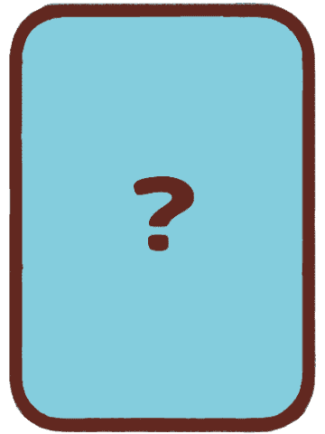

<!DOCTYPE html><html lang="ja"><head><meta charset="utf-8"><meta name="viewport" content="width=device-width, initial-scale=1, viewport-fit=cover"><title>2・3人でなかよし人狼</title><meta name="color-scheme" content="light dark"><script src="https://unpkg.com/peerjs@1.5.4/dist/peerjs.min.js"></script>
<style>
@font-face{font-family:NK;src:url(images/にくまる.ttf),url(にくまる.ttf)}
:root{--lb:#cfe8ef;--sky:#9fd6e3;--hill:#8ecb78;--ink:#6b2a1f;--ttl:#8a3d12;--txt:#4a2318;--pn:#ffffffb8;--pnk:#ef8686;--yel:#f4cd47;--blu:#4f94cf;--tea:#27a898;--x:#dcecf1;--red:#e0403a}
@media(prefers-color-scheme:dark){:root:not([data-theme=light]){--lb:#10252c}}
:root[data-theme=dark]{--lb:#10252c}
html,body{height:100%;margin:0;background:var(--lb)}
body{color:var(--txt);font:700 16px/1.5 NK,'Hiragino Maru Gothic ProN','Yu Gothic',sans-serif;-webkit-tap-highlight-color:transparent}
#st{position:relative;height:100vh;height:100dvh;aspect-ratio:1080/1920;max-width:100%;margin:0 auto;overflow:hidden;background:var(--sky) url(images/Background.png) center/cover no-repeat;display:flex}
.hill{display:none;position:absolute;left:-25%;right:-25%;bottom:-32%;height:58%;background:var(--hill);border-radius:50% 50% 0 0;border-top:6px solid var(--ink)}.nb .hill{display:block}
#app{width:100%;overflow-y:auto;display:flex;flex-direction:column;align-items:center;gap:10px;padding:calc(8px + env(safe-area-inset-top,0px)) 16px calc(18px + env(safe-area-inset-bottom,0px));text-align:center;box-sizing:border-box;position:relative}
#app>*{animation:in .25s both;flex:none}@keyframes in{from{opacity:0;transform:translateY(8px)}}#app.na>*{animation:none}
.ab{color:#fff;-webkit-text-stroke:4px var(--ink);paint-order:stroke fill;line-height:1.6}
.hd{align-self:stretch;display:flex;justify-content:space-between;align-items:center;font-size:17px;font-weight:900;color:var(--ink);gap:10px}.hd a{color:#d8404f;margin-left:10px}
h2{margin:4px 0 0;font-size:27px;color:var(--ttl)}h3{margin:0}p{margin:0}.t{font-size:15px}small{font-size:12px}
.btn{font:inherit;font-weight:900;border:5px solid var(--ink);border-radius:18px;padding:11px 24px;font-size:23px;color:var(--ink);box-shadow:0 4px 0 #0003;background:var(--yel);min-width:44%;transition:transform .1s}
.btn.sm{font-size:16px;padding:6px 14px;min-width:0;border-width:4px}.btn.r{background:#e07a7a}.btn.g{background:var(--tea)}.btn.b{background:var(--blu)}.btn.ok{background:var(--pnk)}.btn.x{background:var(--x)}.btn:disabled{opacity:.4}.btn:active{transform:translateY(3px)}
.col{display:flex;flex-direction:column;gap:12px;width:100%;align-items:center}.row{display:flex;gap:8px;justify-content:center;flex-wrap:wrap;align-items:center}
.bot{margin-top:auto;padding-top:14px;display:flex;flex-direction:column;gap:10px;align-items:center;width:100%}
.panel{background:var(--pn);border-radius:18px;padding:12px;width:100%;box-sizing:border-box;display:flex;flex-direction:column;gap:9px;align-items:center}
input,textarea,select{font:inherit;width:100%;box-sizing:border-box;border:3px solid var(--ink);border-radius:12px;padding:8px;font-size:16px;background:#fff;color:#222}textarea{height:84px;resize:none;font-size:12px}.memo{height:150px;font-size:15px}
.logo{background:var(--yel);border:7px solid var(--ink);border-radius:46% 46% 40% 40%/55% 55% 42% 42%;padding:26px 30px;font-size:46px;line-height:1.15;font-weight:900;margin:14px 0 20px;-webkit-text-stroke:2px var(--ink);paint-order:stroke fill}
.cd{font-size:12px;width:8em;aspect-ratio:.72;position:relative;flex:none}.cd.m{font-size:10.5px}.cd.s{font-size:7px}.cd.l{font-size:22px}.cd img{position:absolute;inset:0;width:100%;height:100%;object-fit:contain}
.dim{opacity:.4}.on,.rd{outline:4px solid var(--red);outline-offset:2px;border-radius:12px}
.tm{font-size:72px;font-weight:900;line-height:1}.tri{width:100%;max-width:340px}.pt{font-size:22px;color:#d33}.ctr{font-size:13px;line-height:1.5}
.fl{animation:fl .5s both}@keyframes fl{from{opacity:0;transform:perspective(600px) rotateY(70deg)}}
.ln{stroke-dasharray:320;animation:dr .5s both}@keyframes dr{from{stroke-dashoffset:320}}.pp{animation:in .3s both}.cu{opacity:0}
.mbtn{position:sticky;bottom:6px;align-self:flex-end;animation:none!important}
.mk{position:absolute;inset:0;background:#0005;z-index:9;display:flex;align-items:flex-end;justify-content:center}.mc{background:#fff;color:#4a2318;width:100%;max-height:88%;overflow:auto;border-radius:20px 20px 0 0;padding:16px 16px calc(16px + env(safe-area-inset-bottom,0px));box-sizing:border-box;display:flex;flex-direction:column;gap:10px;font-size:14px}
.mc>*{flex:none}.tri{aspect-ratio:300/260;height:auto}.mc table{width:100%;border-collapse:collapse}.mc td{border-top:1px solid #ccc;padding:4px;text-align:left}.mc td+td{width:38%}.rr{display:flex;gap:10px;align-items:center;text-align:left;padding:6px}.rr .cd{margin-right:2px}
.fb{position:absolute;inset:0;display:flex;align-items:center;justify-content:center;text-align:center;background:#fff;border:.3em solid var(--ink);border-radius:.8em;font-size:1.5em;line-height:1.2;color:var(--ink);padding:.3em;box-sizing:border-box}
@media(prefers-reduced-motion:reduce){*{animation:none!important}.cu{opacity:1}}
</style></head><body><div id="st"><div class="hill"></div><div id="app"></div><div id="md"></div></div>
<script>
const $=s=>document.querySelector(s),esc=s=>String(s==null?'':s).replace(/[&<>"]/g,c=>({'&':'&amp;','<':'&lt;','>':'&gt;','"':'&quot;'}[c]));
/* [名前, 画像名, チーム(0村人/1人狼), 村の外カードを見る枚数, 2人村の説明, 3人村の説明] */
const R=[
['のんびり村人','のんびり村人',0,0,'のんびり屋の男の子（村人チーム）。能力はなく、村の外カードも見られません。話し合いと「あくしゅ／まもる」の読み合いで勝負します。','のんびり屋の男の子（村人チーム）。能力はなく、村の外カードも見られません。話し合いと「あくしゅ／まもる」の読み合いで勝負します。'],
['てーん村人','てーん村人',0,0,'おてんばな女の子（村人チーム）。能力はなく、村の外カードも見られません。話し合いと「あくしゅ／まもる」の読み合いで勝負します。','おてんばな女の子（村人チーム）。能力はなく、村の外カードも見られません。話し合いと「あくしゅ／まもる」の読み合いで勝負します。'],
['占い師','占い師',0,2,'村人チーム。村の外カード3枚のうち2枚を見られます。見たカードが分かると、相手の役職を絞り込めます。','村人チーム。村の外カード3枚のうち2枚を見られます。見たカードが分かると、2人の役職を絞り込めます。'],
['占い師の弟子','占い師の弟子',0,1,'村人チーム。村の外カード3枚のうち1枚を見られます。占い師より情報が少ないので、話し合いで補いましょう。','村人チーム。村の外カード3枚のうち1枚を見られます。占い師より情報が少ないので、話し合いで補いましょう。'],
['見習い魔女','見習い魔女',0,0,'村人チーム。相手を変身させます。村人チームの相手は「変身人狼」、人狼チームの相手は「変身村人」になり、相手は結果発表まで気づきません。元人狼の「変身村人」とあくしゅすると魔女が+2点！人狼親方と魔法使いには効きません。','村人チーム。変身させる相手を1人選びます。村人チームの相手は「変身人狼」、人狼チームの相手は「変身村人」になり、本人は結果発表まで気づきません。元人狼の「変身村人」とあくしゅすると魔女が+2点！人狼親方と魔法使いには効きません。'],
['魔法使い','魔法使い',0,1,'村人チーム。村の外カードを1枚見て、そのカードと自分のカードを入れ替えます。得点は入れ替えたあとの役職で計算されます（入れ替えた役職の能力は使えません）。見習い魔女の変身は効きません。','村人チーム。村の外カードを1枚見て、そのカードと自分のカードを入れ替えます。得点は入れ替えたあとの役職で計算されます（入れ替えた役職の能力は使えません）。見習い魔女の変身は効きません。'],
['狼少年','狼少年',0,1,'村人チーム。村の外カードを1枚見られます。人狼チームともあくしゅでき、お互い+1点。村人チームとあくしゅすると相手だけ+1点（自分は0点）。村の外にあるときは、セットされた人狼チームのカードに見えます。','村人チーム。村の外カードを1枚見られます。人狼チームともあくしゅでき、お互い+1点。村人チームとあくしゅすると相手だけ+1点（自分は0点）。村の外にあるときは、セットされた人狼チームのカードに見えます。'],
['狼男','狼男村人',0,1,'村の外カードを1枚見られます。ふだんは村人チームですが、50%の確率で人狼の姿になり、人狼チームとして扱われます。魔女に変身させられると、村人の姿は人狼に、人狼の姿は村人になります。','村の外カードを1枚見られます。ふだんは村人チームですが、50%の確率で人狼の姿になり、人狼チームとして扱われます。魔女に変身させられると、村人の姿は人狼に、人狼の姿は村人になります。'],
['人狼','人狼',1,1,'人狼チーム。村の外カードを1枚見られます。村人とあくしゅすると+2点。村人のふりをして上手くあくしゅを取りましょう。','人狼チーム。村の外カードを1枚見られます。村人とあくしゅすると+2点。村人のふりをして上手くあくしゅを取りましょう。'],
['人狼先輩','人狼先輩',1,2,'人狼チーム。村の外カードを2枚見られます。村人に「まもる」を選ばれると失点が大きく、村人が+2点もらいます。','人狼チーム。村の外カードを2枚見られます。村人に「まもる」を選ばれると失点が大きく、村人が+2点もらいます（ペアごとに適用）。'],
['人狼親方','人狼親方',1,3,'人狼チーム。村の外カードを3枚すべて見られます。村人に「まもる」を選ばれると村人が+2点、お互いに「まもる」でも村人に+1点入ります。魔女の変身は効きません。','人狼チーム。村の外カードを3枚すべて見られます。村人に「まもる」を選ばれると村人が+2点、お互いに「まもる」でも村人に+1点入ります（ペアごとに適用）。魔女の変身は効きません。'],
['人狼マジシャン','人狼マジシャン',1,1,'人狼チーム。村の外カードを1枚見られます。あくしゅの時間に、相手が「あくしゅ」を選んでいたら「まもる」に、「まもる」なら「あくしゅ」に変えてしまいます。','人狼チーム。村の外カードを1枚見られます。あくしゅの時間に1人を選ぶと、その人の2つの選択（あくしゅ／まもる）が逆になります。'],
['人狼魔法使い','人狼魔法使い',1,1,'人狼チーム。村の外カードを1枚見られます。相手が村の外カードを見られる役職なら、最初にめくるカードを人狼魔法使いのカード（幻）に見せかけます。','人狼チーム。村の外カードを1枚見られます。村の外カードを見られる他のプレイヤー全員に、最初にめくるカードを人狼魔法使いのカード（幻）に見せかけます。'],
['助言者','白の助言者',0,0,'オンライン対戦・3人村専用の役職です。','オンライン・3人村限定。引いたとき50%で「白の助言者」（村人チーム／のんびり村人と同じ）か「黒の助言者」（人狼チーム／人狼と同じ。村の外カードを1枚見られる）になります。話しあい中、特定の1人に12文字以内の「助言」を合計3回まで送れます。受け取った人は誰からか分かりません。一度送ると、その人にしか送れなくなります。'],
['天使/悪魔','天使と悪魔',0,0,'引いたとき、天使か悪魔かを自分で選びます。天使は村人チーム（のんびり村人と同じ）で、場にいる人狼の人数を知ります。悪魔は人狼チーム（人狼親方と同じ）で、村の外カード3枚をすべて見られ、場にいる市民の人数を知ります。悪魔には魔女の変身が効きません。','引いたとき、天使か悪魔かを自分で選びます。天使は村人チーム（のんびり村人と同じ）で、場にいる人狼の人数を知ります。悪魔は人狼チーム（人狼親方と同じ）で、村の外カード3枚をすべて見られ、場にいる市民の人数を知ります。悪魔には魔女の変身が効きません。']];
const COL=['#e0506a','#3f7fd0','#2f9e6a'],ICE={iceServers:[{urls:'stun:stun.l.google.com:19302'}]},MEMO=500,MP=['turn','talk','vote','shake'];
let G=null,mode='off',view='title',n=2,me=0,isHost=true,ready=false,ch={},tEnd=0,memo='',hist={},names=['','',''],opt={vote:0,time:180,m6:0},pick=[],peers=[],conn=null,gname='',jroom='',jerr='',rerr='',room='',pr=null,lv='',jst=0,lg=0,ltk=0,mg=null,wt=null,st=0,vi=0,lastR=0,rfr=0,rl3=0,rlt=0,ad=null,adL=0,rvm=[],advT=null,advTxt='',lp='',ADALL=false;
const sh=a=>{a=[...a];for(let i=a.length;i>1;){const j=Math.random()*i--|0;[a[i],a[j]]=[a[j],a[i]]}return a};
const bi=new Image();bi.onerror=()=>$('#st').classList.add('nb');bi.src='images/Background.png';
const IMG=(r,v)=>r==7?(v&&G.wfm?'狼男人狼':'狼男村人'):r==13?(v==2?(G.advB?'黒の助言者':'白の助言者'):'助言者セット'):r==14?'天使と悪魔':R[r][1];
const fb=e=>{if(e.dataset.a){const a=e.dataset.a;delete e.dataset.a;e.src='images/'+a+'.png'}else{const d=document.createElement('span');d.className='fb';d.textContent=e.dataset.n;e.replaceWith(d)}};
/* v: 未指定=伏せ状態 / 1=村の外カードなどで狼男の姿を表示 / 2=本人のカード・結果発表（助言者の白/黒も表示）。助言者は2以外では「助言者セット」画像 */
const card=(r,s,v)=>r<0?`<div class="cd back ${s||''}"></div>`:`<div class="cd ${s||''}"></div>`;
const hd=()=>`<div class="hd"><span>${G?`<button class="btn sm x" onclick="modal(QT(),1)">中断</button>`:''}</span><span><a onclick="rlm()">役職</a><a onclick="modal(PT())">ポイント表</a></span></div>`,bot=x=>`<div class="bot">${x}</div>`,wait=t=>`<h2>${t}</h2>`;
const pub=z=>{if(!G.m6)return G.pool.map(r=>card(r,z)).join('');return [...G.sel].sort((a,b)=>a-b).map(r=>card(r,z)).concat(Array(Math.max(0,G.n+3-G.sel.length)).fill(card(-1,z))).join('')};
function modal(x,nc){$('#md').innerHTML=`<div class="mk" onclick="if(event.target==this)$('#md').innerHTML=''"><div class="mc">${x}${nc?'':'<button class="btn sm" onclick="$(\'#md\').innerHTML=\'\'">とじる</button>'}</div></div>`}
const QT=()=>`<h3>中断しますか？</h3><p>ホームに戻り、ゲームは終了します。</p><div class="row"><button class="btn sm r" onclick="quit()">はい</button><button class="btn sm x" onclick="$('#md').innerHTML=''">いいえ</button></div>`;
function quit(){peers.forEach(p=>{try{p&&p.dc.close()}catch(e){}});peers=[];if(pr){try{pr.destroy()}catch(e){}pr=null}if(conn){try{conn.close()}catch(e){}conn=null}G=null;view='title';mode='off';isHost=true;ready=false;ch={};st=0;vi=0;rvm=[];ad=null;adL=0;advT=null;advTxt='';mg=wt=null;memo='';hist={};lg=0;ltk=0;jst=0;jerr='';rerr='';room='';$('#md').innerHTML='';render()}
const tb=a=>`<table>${a.map(x=>`<tr><td>${x[0]}</td><td>${x[1]}</td></tr>`).join('')}</table>`;
const PTT=()=>`<h3>ポイント表</h3>${G?`<p>現在：${G.names.map((x,i)=>x+' '+G.tot[i]+'点').join(' ／ ')}</p>`:''}<b>互いにあくしゅ</b>${tb([['村人チーム×村人チーム','互いに+1'],['人狼チーム×村人チーム','人狼に+2'],['人狼チーム×人狼チーム','互いに+1'],['見習い魔女×変身村人（元人狼）','魔女+2／変身村人+1']])}<b>まもるを選んだ場合</b>${tb([['村人のまもる×村人のあくしゅ','あくしゅ側+1'],['村人のまもる×人狼のあくしゅ','村人側+1'],['村人のまもる×人狼先輩・親方のあくしゅ','村人チーム+2'],['人狼のまもる×村人のあくしゅ','互いに0'],['人狼のまもる×人狼のあくしゅ','あくしゅ側+1'],['まもる×まもる','互いに0'],['村人のまもる×人狼親方のまもる','村人+1']])}<b>狼少年がいるペア</b>${tb([['あくしゅ×人狼チームのあくしゅ','互いに+1'],['あくしゅ×村人チームのあくしゅ','村人チーム+1'],['まもる×人狼チームのあくしゅ','互いに0']])}<b>投票（ONのとき）</b>${tb([['3人：的中','指名した人+1'],['3人：外れ','指名された人+1'],['3人：潜伏成功','その人+1'],['2人：的中','+1（外れは疑われた側+1）']])}<p>3ゲーム目と5ゲーム目は得点2倍。</p><b>新役職の扱い</b>${tb([['天使','のんびり村人と同じ'],['悪魔','人狼親方と同じ'],['白の助言者','村人チーム（のんびり村人と同じ）'],['黒の助言者','人狼チーム（人狼と同じ）']])}`;
function RLV(){const S=G?(G.m6?G.sel:[]):(opt.m6?pick:[]);
 return `<h3>役職説明</h3><div class="row">3人村 <button class="btn sm ${rl3?'':'x'}" onclick="rl3=1;modal(RLV())">ON</button><button class="btn sm ${rl3?'x':''}" onclick="rl3=0;modal(RLV())">OFF</button></div><div class="row"><button class="btn sm ${rlt?'x':''}" onclick="rlt=0;modal(RLV())">村人役職</button><button class="btn sm ${rlt?'':'x'}" onclick="rlt=1;modal(RLV())">人狼役職</button></div>`+(S.length?'<small>赤い枠は、選択した役職です（枠のないものはランダム抽選）</small>':'')+R.map((x,i)=>(i>=13?(i==14||rl3):x[2]==rlt)?`<div class="rr ${S.includes(i)?'rd':''}">${card(i,'s')}<div><b>${x[0]}</b><br>${rl3?x[5]:x[4]}</div></div>`:'').join('')}
function rlm(){rl3=G?G.n==3:n==3;modal(RLV())}
const combos=(a,k,st0=0,c=[],o=[])=>{if(c.length==k){o.push([...c]);return o}for(let i=st0;i<a.length;i++){c.push(a[i]);combos(a,k,i+1,c,o);c.pop()}return o};
const feS=S=>{const W=S.filter(r=>R[r][2]).length,F=S.filter(r=>r==7||r==13).length;return W+F>=1&&W<=3-(S.includes(14)?1:0)};
const wolfC=r=>!!(R[r][2]||(r==7&&G.wfm)||(r==13&&G.advB));
const Kv=r=>r==13?(G.advB?1:0):r==14?3:R[r][3];
const RN=r=>r==13?(G.advB?'黒の助言者':'白の助言者'):r==14?(adL?(ad==1?'悪魔':'天使'):'天使/悪魔'):R[r][0];
const adCnt=(cur,dv)=>G.roles0.filter((x,i)=>i!=cur).concat(ADALL?G.ctr0:[]).filter(x=>dv?!wolfC(x):wolfC(x)).length;
const inb=()=>{const m=(G&&G.msgs||[]).filter(x=>x.to==me);return m.length?`<div class="panel t"><b>助言が届いています</b>${m.map(x=>`<div>「${esc(x.t)}」</div>`).join('')}<small>誰からかは分かりません</small></div>`:''};
function advAct(s,a){if(G.phase!='talk'||mode!='on'||G.n!=3||G.roles0[s]!=13||!a||!Number.isInteger(a.to)||a.to==s||a.to<0||a.to>2||typeof a.t!='string')return;
 const left=G.advN[s]==null?3:G.advN[s],t0=G.advTo[s],t=[...a.t.trim()].slice(0,12).join('');
 if(left>0&&t&&(t0==null||t0==a.to)){G.msgs.push({f:s,to:a.to,t});G.advN[s]=left-1;G.advTo[s]=a.to}}
function sendAdv(){const t=[...advTxt.trim()].slice(0,12).join(''),to=G.advTo[me]!=null?G.advTo[me]:advT;if(!t||to==null)return;advTxt='';const e=$('#adt');if(e)e.value='';send(me,{adv:{to,t}})}
/* ---- 組み合わせ（ポイント計算ツール） ---- */
let ptTab=0,cmb={a:0,b:8,va:0,vb:0,ta:0,tb:0,ca:'s',cb:'s',sel:'a'};
const VAR={7:['村人の姿','人狼の姿'],13:['白（村人チーム）','黒（人狼チーム）'],14:['天使','悪魔']},NOTF=(r,v)=>r==5||r==10||(r==14&&v==1);
const cmbG=()=>{const c=cmb,vv=r=>c.a==r?c.va:c.b==r?c.vb:0;return{roles:[c.a,c.b],tf:{0:c.ta&&!NOTF(c.a,c.va)?1:0,1:c.tb&&!NOTF(c.b,c.vb)?1:0},wfm:vv(7)==1,advB:vv(13)==1,dev:vv(14)==1}};
function cmbRes(){const sv=G;G=cmbG();try{return sc(0,1,cmb.ca,cmb.cb)}finally{G=sv}}
function cardV(r,z){const sv=G;G=cmbG();try{return card(r,z,2)}finally{G=sv}}
function cmbR(){const m=document.querySelector('.mc'),y=m?m.scrollTop:0;modal(PT());const m2=document.querySelector('.mc');if(m2)m2.scrollTop=y}
function cmbPick(r){const c=cmb,o=c.sel=='a'?'b':'a';if(c[o]==r)return;c[c.sel]=r;c['v'+c.sel]=0;c['t'+c.sel]=0;c.sel=o;cmbR()}
const cmbSet=(k,v)=>{cmb[k]=v;if(k=='va'&&NOTF(cmb.a,v))cmb.ta=0;if(k=='vb'&&NOTF(cmb.b,v))cmb.tb=0;cmbR()},cmbArrow=b=>{if(b==1)cmb.ca=cmb.ca=='s'?'p':'s';else cmb.cb=cmb.cb=='s'?'p':'s';cmbR()};
function CMB(){const c=cmb,rs=cmbRes(),side=k=>{const r=c[k],v=c['v'+k],t=c['t'+k];return `<div class="ctr" style="flex:1"><b>${k=='a'?'A':'B'}</b><div onclick="cmb.sel='${k}';cmbR()" class="${c.sel==k?'on':''}" style="display:inline-block">${cardV(r,'m')}</div><br>${R[r][0]}${VAR[r]?`<div class="row">${VAR[r].map((x,q)=>`<button class="btn sm ${v==q?'':'x'}" onclick="cmbSet('v${k}',${q})">${x}</button>`).join('')}</div>`:''}${NOTF(r,v)?'':`<div class="row"><button class="btn sm ${t?'':'x'}" onclick="cmbSet('t${k}',${t?0:1})">魔女に変身させられた</button></div>`}</div>`},
 ar=[[0,1,c.ca=='p'?'#2f9e6a':'#e0506a',c.ca,22,'cmbArrow'],[1,0,c.cb=='p'?'#2f9e6a':'#e0506a',c.cb,22,'cmbArrow']],pos={0:[60,130],1:[240,130]};
 return `<p class="t">役職カードを2枚セットして、矢印をタップで「握」あくしゅ／「守」まもる を切り替えます。<br>下のカード一覧から、いま光っている枠（${c.sel=='a'?'A':'B'}）のカードを選べます。</p><div class="row" style="align-items:flex-start;flex-wrap:nowrap">${side('a')}${side('b')}</div>${tri(pos,ar,0,i=>i==1?'B':'A')}<small>A→Bの矢印はAの選択、B→Aの矢印はBの選択です</small><div class="row">${[['A','ca'],['B','cb']].map(([n,k])=>`<span><b>${n}</b> <button class="btn sm ${c[k]=='s'?'r':'x'}" onclick="cmbSet('${k}','s')">握 あくしゅ</button><button class="btn sm ${c[k]=='p'?'g':'x'}" onclick="cmbSet('${k}','p')">守 まもる</button></span>`).join('')}</div><div class="panel"><b>結果</b><div style="font-size:22px;color:#d33">A：${rs[0]>0?'+':''}${rs[0]}点　／　B：${rs[1]>0?'+':''}${rs[1]}点</div><small>3ゲーム目・5ゲーム目は2倍、投票の点は含みません</small></div><b>カード一覧（${c.sel=='a'?'A':'B'}に設定）</b><div class="row">${R.map((x,i)=>`<div onclick="cmbPick(${i})" class="${c.a==i||c.b==i?'dim':''}">${card(i,'s')}</div>`).join('')}</div>`}
const PT=()=>`<div class="row"><button class="btn sm ${ptTab?'x':''}" onclick="ptTab=0;modal(PT())">一覧表</button><button class="btn sm ${ptTab?'':'x'}" onclick="ptTab=1;modal(PT())">組み合わせ</button></div>`+(ptTab?CMB():PTT());
/* ---- game logic ---- */
function deal(){let p,t=0;const N=G.n,TT=N+3,s0=G.sel,over=s0.length>TT,c=over?[]:s0,al=[...Array(15).keys()].filter(r=>r!=13||(mode=='on'&&N==3)),okw=q=>{const w=q.filter(wolfC).length;return w>=1&&w<=3-(q.includes(14)?1:0)},rb=()=>{G.wfm=Math.random()<.5;G.advB=Math.random()<.5};
 G.dev=Math.random()<.5;
 /* 狼男・助言者の白/黒は先に50%ずつで決め、その条件を満たす村のカードを引く（満たせないときだけ引き直す） */
 if(over){/* 上限超え選択：固定枠なし。選んだ役職の中からランダムにTT枚 */const all=combos(s0,TT);let cb=[];do{rb();cb=all.filter(okw)}while(!cb.length&&++t<40);p=sh(cb.length?cb[Math.random()*cb.length|0]:sh(s0).slice(0,TT))}
 else{do{rb();let u=0;do{const rest=sh(al.filter(r=>!c.includes(r))).slice(0,TT-c.length);p=sh([...c,...rest])}while(!okw(p)&&++u<300)}while(!okw(p)&&++t<40)}
 G.pool=[...p].sort((a,b)=>a-b);G.roles0=p.slice(0,N);G.ctr0=p.slice(N);G.roles=[...G.roles0];G.ctr=[...G.ctr0];G.tf={};G.mgT=null;G.memos={};G.view={};G.wl=[];G.msgs=[];G.advTo={};G.advN={};G.adC=0;G.endReq={};
 const wl=G.pool.filter(r=>wolfC(r)&&r!=13),boy=wl.length?wl[Math.random()*wl.length|0]:6,w12=G.roles0.indexOf(12);
 G.roles0.forEach((r,i)=>{const k=Kv(r);if(!k)return;const ps=sh([0,1,2]).slice(0,k);
  G.view[i]=ps.map((q,j)=>{let d=G.ctr0[q];if(d==6)d=boy;if(j==0&&w12>=0&&w12!=i)d=12;return[q,d]});
  if(r==5){G.roles[i]=G.ctr0[ps[0]];G.ctr[ps[0]]=5}});
 go('prep')}
function go(p){G.phase=p;G.done={};if(p=='talk'){G.tl=G.opt.time*1000;G.tk=(G.tk||0)+1;G.endReq={}}}
function start(){G={n,names:names.slice(0,n).map((x,i)=>esc(x||'Player'+(i+1))),opt:{...opt},g:1,tot:Array(n).fill(0),last:Array(n).fill(0),ch:{},votes:{},memos:{},m6:opt.m6,sel:opt.m6?[...pick]:[]};deal();bc()}
const all=()=>[...Array(G.n).keys()].every(i=>G.done[i]);
function act(s,d){
 if(d.adv)advAct(s,d.adv);else if(d.memo!==undefined)G.memos[s]=d.memo;
 else{const p=G.phase;
  if(p=='prep'&&s==0)go('turn');
  else if(p=='turn'){if(d.w!=null)G.wl.push(d.w);if(d.ad!=null){G.dev=!!d.ad;G.adC=1}G.done[s]=1;if(all()){G.wl.forEach(w=>{const r0=G.roles0[w];if(![5,10].includes(r0)&&!(r0==14&&G.dev))G.tf[w]=1});go('talk')}}
  else if(p=='talk'){if(d.end){const nx=()=>go(G.opt.vote?'vote':'shake');if(d.force||mode!='on')nx();else{const e=G.endReq;if(e[s])delete e[s];else e[s]=1;if(Object.keys(e).length>=G.n)nx()}}else if(d.adj){G.tl=Math.max(10000,d.left+d.adj);G.tk++}}
  else if(p=='vote'){G.votes[s]=d.v;G.done[s]=1;if(all())go('shake')}
  else if(p=='shake'){if(d.mg!=null)G.mgT=d.mg;G.ch[s]=d.c;G.done[s]=1;if(all()){score();go('result')}}
  else if(p=='result'&&s==0&&d.next){if(G.g>=5)go('final');else{G.g++;G.ch={};G.votes={};deal()}}}
 bc()}
const base=i=>{const r=G.roles[i];return R[r][2]||(r==7&&G.wfm)||(r==13&&G.advB)||(r==14&&G.dev)?1:0},tm=i=>base(i)^(G.tf[i]?1:0);
function sc(i,j,cx,cy){const r=G.roles.map(q=>q==14&&G.dev?10:q),x=r[i],y=r[j],wx=tm(i),wy=tm(j);
 if(cx=='s'&&cy=='s'&&((x==4&&G.tf[j]&&base(j))||(y==4&&G.tf[i]&&base(i))))return x==4?[2,1]:[1,2];
 if(x==6||y==6){const b=x==6,O=b?j:i,cb=b?cx:cy,co=b?cy:cx,wo=tm(O);let q=null;
  if(cb=='s'&&co=='s')q=wo?[1,1]:[0,1];else if(cb=='p'&&co=='s'&&wo)q=[0,0];
  if(q)return b?q:[q[1],q[0]]}
 if(cx==cy){if(cx=='p')return[!wx&&y==10?1:0,!wy&&x==10?1:0];return wx==wy?[1,1]:wx?[2,0]:[0,2]}
 const px=cx=='p',P=px?i:j,S=px?j:i,wp=tm(P),ws=tm(S);let a,b;
 if(!wp)[a,b]=ws?[[9,10].includes(r[S])?2:1,0]:[0,1];else[a,b]=ws?[0,1]:[0,0];
 return px?[a,b]:[b,a]}
function score(){const N=G.n,p=Array(N).fill(0),M=[3,5].includes(G.g)?2:1;
 if(G.mgT!=null&&G.ch[G.mgT])for(const j in G.ch[G.mgT])G.ch[G.mgT][j]=G.ch[G.mgT][j]=='s'?'p':'s';
 for(let i=0;i<N;i++)for(let j=i+1;j<N;j++){const[a,b]=sc(i,j,G.ch[i][j],G.ch[j][i]);p[i]+=a;p[j]+=b}
 if(G.opt.vote){const v=G.votes;
  if(N==3){const hit=[0,0,0];for(let i=0;i<3;i++)if(v[i]>=0){p[v[i]]++;hit[v[i]]=1}for(let i=0;i<3;i++)if(tm(i)&&!hit[i])p[i]++}
  else for(let i=0;i<2;i++){const o=1-i,yes=v[i]==o;if(yes==!!tm(o))p[i]++;else p[o]++}}
 G.pts=p.map(x=>x*M);G.last=G.pts;G.tot=G.tot.map((x,i)=>x+G.pts[i])}
/* ---- sync / net ---- */
function sync(){if(G.g!=lg){if(lg)hist[lg]=memo;memo='';advT=null;advTxt='';lg=G.g}if(G.phase=='talk'&&G.tk!=ltk){ltk=G.tk;tEnd=Date.now()+G.tl}}
function bc(){if(mode=='on'&&isHost)peers.forEach(p=>p&&p.ok&&p.dc.send(JSON.stringify({t:'s',G})));sync();render()}
function send(s,d){if(mode=='on'&&!isHost)conn.send(JSON.stringify({t:'a',s,d}));else act(s,d)}
function fin(s,d){ready=false;ch={};mg=wt=null;st=0;vi=0;rvm=[];ad=null;adL=0;send(s,d)}
const lost=()=>{if(G){alert('接続が切れました。ホームに戻ります');quit()}else if(!isHost&&view=='join'){jst=0;jerr='接続が切れました（満員の可能性があります）';render()}};
function mkRoom(){if(pr){try{pr.destroy()}catch(e){}pr=null}rerr='';
 if(typeof Peer=='undefined'){rerr='通信ライブラリを読み込めませんでした';render();return}
 room=String(1000+Math.random()*9000|0);
 const p=pr=new Peer('nkjinro-'+room);
 p.on('error',e=>{if(e.type=='unavailable-id')mkRoom();else{room='';rerr='サーバーに接続できません。しばらくしてからやり直してください';render()}});
 p.on('open',()=>render());
 p.on('connection',c=>{const i=peers.findIndex(x=>!x);
  if(i<0||G){c.on('open',()=>setTimeout(()=>c.close(),300));return}
  const q=peers[i]={dc:c,seat:i+1,ok:0};
  c.on('open',()=>{q.ok=1;c.send(JSON.stringify({t:'seat',s:q.seat}));render()});
  c.on('close',()=>{q.ok=0;if(G)lost();else{if(peers[i]===q)peers[i]=null;render()}});
  c.on('error',()=>{if(!G&&peers[i]===q&&!q.ok){peers[i]=null;render()}});
  c.on('data',d=>{const m=JSON.parse(d);if(m.t=='n'){names[q.seat]=m.n||'Player'+(q.seat+1);render()}else if(m.t=='a'&&G)act(q.seat,m.d)})})}
function joinRoom(){gname=$('#gn').value||'Player';jroom=$('#rn').value.trim();
 if(!/^\d{4}$/.test(jroom)){alert('部屋番号は4けたの数字です');return}
 if(typeof Peer=='undefined'){jerr='通信ライブラリを読み込めませんでした';render();return}
 if(pr){try{pr.destroy()}catch(e){}pr=null}jerr='';jst=2;
 const p=pr=new Peer();
 p.on('error',e=>{jst=0;jerr=e.type=='peer-unavailable'?'その部屋番号は見つかりません':'接続できませんでした。しばらくしてからやり直してください';render()});
 p.on('open',()=>{const c=conn=p.connect('nkjinro-'+jroom,{reliable:true});
  c.on('open',()=>{c.send(JSON.stringify({t:'n',n:gname}));jst=1;render()});c.on('close',lost);
  c.on('data',d=>{const m=JSON.parse(d);if(m.t=='seat')me=m.s;else if(m.t=='s'){G=m.G;sync();render()}})});
 render()}
/* ---- ui helpers ---- */
const rv1=(q,k)=>{if(vi<k&&!rvm.includes(q)){rvm.push(q);vi=rvm.length;render()}},tg=j=>{ch[j]=ch[j]=='s'?'p':'s';render()},adj=d=>act(0,{adj:d,left:Math.max(0,tEnd-Date.now())});
function rn(){document.querySelectorAll('.nm').forEach((e,i)=>names[mode=='on'?0:i]=e.value)}
const sn=k=>{rn();n=k;opt.vote=k==3?1:0;pick=[];render()};
function proceed(){if(mode=='off')start();else{peers=Array(n-1).fill(null);view='lobby';mkRoom();render()}}
function go2(){rn();if(!(mode=='on'&&n==3))pick=pick.filter(r=>r!=13);if(opt.m6){view='pick';render()}else proceed()}
const tp=r=>{const i=pick.indexOf(r);if(i>=0)pick.splice(i,1);else pick.push(r);render()};
function memoSheet(){modal(`<h3>推理メモ（自分だけに見えます）</h3>${G&&mode=='on'?inb():''}<textarea class="memo" maxlength="${MEMO}" oninput="memo=this.value;$('#mc').textContent=memo.length+'/${MEMO}'">${esc(memo)}</textarea><small id="mc">${memo.length}/${MEMO}</small>${Object.keys(hist).map(g=>`<details><summary>第${g}ゲームのメモ</summary>${esc(hist[g])}</details>`).join('')}`)}
function tri(pos,ar,an,lab){let h='<svg viewBox="0 0 300 260" class="tri">';
 ar.forEach(([a,b,col,ic,off,fn],k)=>{const[x1,y1]=pos[a],[x2,y2]=pos[b],dx=x2-x1,dy=y2-y1,L=Math.hypot(dx,dy),ux=dx/L,uy=dy/L,ox=-uy*off,oy=ux*off,sx=x1+ux*34+ox,sy=y1+uy*34+oy,ex=x2-ux*34+ox,ey=y2-uy*34+oy,hx=ex-ux*14,hy=ey-uy*14,dl=an?an+k*.2:0,bg=ic=='s'?'#e0506a':'#2f9e6a',tx=ic=='s'?'握':'守',mx=(sx+ex)/2,my=(sy+ey)/2;
  h+=`<g ${fn?`onclick="${fn}(${b})"`:''}><line ${an?'class="ln"':''} style="animation-delay:${dl}s" x1="${sx}" y1="${sy}" x2="${ex}" y2="${ey}" stroke="${col}" stroke-width="5" stroke-linecap="round"/><g ${an?'class="pp"':''} style="animation-delay:${dl+.4}s"><polygon points="${ex},${ey} ${hx-uy*8},${hy+ux*8} ${hx+uy*8},${hy-ux*8}" fill="${col}"/><circle cx="${mx}" cy="${my}" r="15" fill="${bg}" stroke="#fff" stroke-width="2"/><text x="${mx}" y="${my+6}" fill="#fff" font-size="16" font-weight="900" text-anchor="middle">${tx}</text></g>${fn?`<line x1="${sx}" y1="${sy}" x2="${ex}" y2="${ey}" stroke="transparent" stroke-width="${off?Math.max(16,off*2-4):44}"/>`:''}</g>`});
 Object.keys(pos).forEach(i=>{const[x,y]=pos[i];h+=`<circle cx="${x}" cy="${y}" r="30" fill="${COL[i]}" stroke="#6b2a1f" stroke-width="4"/><text x="${x}" y="${y+5}" fill="#fff" font-size="13" font-weight="900" text-anchor="middle">${(lab?lab(i):G.names[i]).slice(0,5)}</text>`});
 return h+'</svg>'}
/* ---- screens ---- */
const T=()=>`<div class="logo"><span style="color:#e48ab8">2・3人で</span><br><span style="color:#5bbbe9">人狼</span></div><div class="col"><button class="btn r" onclick="mode='off';view='setup';render()">オフライン対戦</button><button class="btn g" onclick="mode='on';view='onsel';render()">オンライン対戦</button><button class="btn" onclick="view='rule';render()">ルール</button></div>`;
const OS=()=>`${hd()}<h2>オンライン対戦</h2><div class="col"><button class="btn g" onclick="isHost=true;view='setup';render()">部屋をつくる</button><button class="btn b" onclick="isHost=false;view='join';render()">参加する</button></div>`+bot(`<button class="btn sm x" onclick="view='title';render()">もどる</button>`);
function S(){const on=mode=='on',b=(c,f,t)=>`<button class="btn sm ${c?'':'x'}" onclick="rn();${f};render()">${t}</button>`;
 return `${hd()}<h2>ゲームの準備</h2><div class="panel"><div class="row">① 形式 ${b(!on,"mode='off'",'オフライン')}${b(on,"mode='on'",'オンライン')}</div><div class="row">② 人数 ${b(n==2,'sn(2)','2人')}${b(n==3,'sn(3)','3人')}</div><div class="row">③ 名前</div>${[...Array(on?1:n).keys()].map(i=>`<input class="nm" placeholder="Player${i+1}" value="${esc(names[i])}" maxlength="8">`).join('')}<div class="row">④ 役職カード ${b(!opt.m6,'opt.m6=0','完全ランダム')}${b(opt.m6,'opt.m6=1',(n+3)+'枚選択')}</div><div class="row">⑤ 投票の時間 ${b(opt.vote,'opt.vote=1','ON')}${b(!opt.vote,'opt.vote=0','OFF')}</div><div class="row">話しあい <select style="width:auto" onchange="opt.time=+this.value">${[60,120,180,300].map(t=>`<option value="${t}" ${opt.time==t?'selected':''}>${t/60}分</option>`).join('')}</select></div></div>`+bot(`<button class="btn ok" onclick="go2()">${opt.m6||on?'つぎへ':'はじめる'}</button><button class="btn sm x" onclick="view='title';render()">もどる</button>`)}
function pkBad(){const T=n+3,k=pick.length,D=pick.includes(14)?1:0,W=pick.filter(r=>R[r][2]).length,F=pick.filter(r=>r==7||r==13).length;
 if(k<=T){if(W>3-D)return D&&W==3?'天使/悪魔が悪魔になると人狼チームが4枚になります。選び直してね':'人狼チームが4枚以上になります。選び直してね';return k==T&&W+F<1?'人狼チームが0枚になります。選び直してね':''}
 return combos(pick,T).some(feS)?'':'人狼チームが1〜3枚になる組み合わせが作れません。選び直してね'}
function PKV(){const T=n+3,k=pick.length,bad=pkBad(),av=r=>r!=13||(mode=='on'&&n==3);
 return `${hd()}<h2>${T}枚選択</h2><p class="t">使うカードを選んでね。${T}枚より多く選ぶこともできます。<br>${k>T?`選んだ ${k}枚の中から、毎ゲームランダムで${T}枚が村のカードになります（固定枠なし）`:`選んだ ${k}枚 ／ ランダム ${T-k}枚（選ばなかった枠はランダム）`}</p><div class="row">${R.map((x,i)=>av(i)?`<div onclick="tp(${i})" class="${pick.includes(i)?'on':'dim'}">${card(i,'m')}</div>`:'').join('')}</div><p class="t" style="color:#d33">${bad}</p>`+bot(`<button class="btn ok" ${bad?'disabled':''} onclick="proceed()">けってい</button><div class="row"><button class="btn sm x" onclick="pick=[];render()">全部ランダム</button><button class="btn sm x" onclick="view='setup';render()">もどる</button></div>`)}
const L=()=>`${hd()}<h2>なかまを集める</h2><div class="panel"><small>この部屋番号を相手に伝えてね</small><div class="tm" style="letter-spacing:.1em">${room||'…'}</div>${rerr?`<p class="t" style="color:#d33">${rerr}</p>`:''}</div>`+peers.map((p,i)=>`<div class="panel"><b>相手${i+1}：${p&&p.ok?'接続済み　'+esc(names[i+1]):'待っています…'}</b></div>`).join('')+bot(`<button class="btn ok" ${room&&peers.every(p=>p&&p.ok)?'':'disabled'} onclick="start()">はじめる</button><button class="btn sm x" onclick="quit()">もどる</button>`);
const J=()=>`${hd()}<h2>参加する</h2><div class="panel"><input id="gn" placeholder="あなたの名前" value="${esc(gname)}" maxlength="8"><input id="rn" placeholder="部屋番号（4けた）" value="${esc(jroom)}" inputmode="numeric" maxlength="4"><button class="btn sm b" ${jst?'disabled':''} onclick="joinRoom()">${jst==2?'接続中…':'参加'}</button>${jerr?`<p class="t" style="color:#d33">${jerr}</p>`:''}${jst==1?'<p class="t">接続しました。ホストの開始を待ってね</p>':''}</div>`+bot(`<button class="btn sm x" onclick="quit()">もどる</button>`);
const RU=()=>`${hd()}<h2>ルール</h2><div class="panel t" style="text-align:left"><p>役職カードが各プレイヤーに1枚ずつ配られ、残りが「村の外カード」（3枚）になります。順番に自分の役職を確認し、能力で村の外カードを見ます。</p><p>オンラインでは、話し合いは時間切れか、全員が「終了を求める」を押すと終わります。</p><p>流れ：準備 → 話し合い → 投票（ONのとき）→ あくしゅ／まもる → 結果発表。5ゲームの合計点が高い人の勝ちで、3・5ゲーム目は得点2倍。同点は最終ゲームの得点で決まります。</p><p>あくしゅ／まもるは相手ごとに選びます。得点は右上のポイント表、役職の能力は「役職」から見られます。</p></div>`+bot(`<button class="btn" onclick="view='title';render()">もどる</button>`);
function RS(){const N=G.n,on=mode=='on',fr=lastR!=G.g,adr=(G.msgs||[]).length?`<div class="panel t"><b>助言の記録</b>${G.msgs.map(m=>`<div>${G.names[m.f]} → ${G.names[m.to]}：「${esc(m.t)}」</div>`).join('')}</div>`:'';lastR=G.g;rfr=fr;
 const pos=N==2?{0:[60,130],1:[240,130]}:{0:[150,50],1:[50,205],2:[250,205]},ar=[];
 for(let i=0;i<N;i++)for(let j=0;j<N;j++)if(i!=j)ar.push([i,j,COL[i],G.ch[i][j],9]);
 const ms=on?[...Array(N).keys()].filter(i=>i!=me&&G.memos[i]).map(i=>`<div class="panel t"><b>${G.names[i]}の推理メモ</b>${esc(G.memos[i])}</div>`).join(''):'';
 return `${hd()}<h2>結果発表</h2><div class="row" style="align-items:flex-start">${G.roles.map((r,i)=>`<div class="ctr"><div ${fr?`class="fl" style="animation-delay:${.3+i*.5}s"`:''}>${card(r,'m',2)}</div>${G.names[i]}${G.tf[i]?'<br>（変身）':''}${G.roles[i]==14?`<br>（${G.dev?'悪魔':'天使'}）`:''}${G.roles0[i]==5?'<br>（入れ替え後）':''}<br>${fr?`<span class="pt cu" data-n="${G.pts[i]}">+0</span>`:`<span class="pt">+${G.pts[i]}</span>`} ${fr?`<small class="tt" data-a="${G.tot[i]-G.pts[i]}" data-b="${G.tot[i]}">計${G.tot[i]-G.pts[i]}</small>`:`<small>計${G.tot[i]}</small>`}</div>`).join('')}</div>${tri(pos,ar,fr?.5+N*.5:0)}<p class="t">村の外カード</p><div class="row">${G.ctr.map(r=>card(r,'s',1)).join('')}</div><p class="t">${G.mgT!=null?'マジシャンが選択を反転させました<br>':''}${[3,5].includes(G.g)?'このゲームは得点2倍！':''}</p>${on?`<label class="t"><input type="checkbox" style="width:auto" onchange="send(me,{memo:this.checked?memo:null})"> 推理メモを他人に公開</label>`:''}${ms}${adr}`+bot(!on||me==0?`<button class="btn ok" onclick="send(0,{next:1})">${G.g>=5?'最終結果へ':'次のゲームへ'}</button>`:wait('ホストが進めます'))}
function FN(){const m=Math.max(...G.tot);let w=[...G.tot.keys()].filter(i=>G.tot[i]==m);if(w.length>1){const lm=Math.max(...w.map(i=>G.last[i]));w=w.filter(i=>G.last[i]==lm)}
 return `${hd()}<h2>最終結果</h2>`+[...G.tot.keys()].sort((a,b)=>G.tot[b]-G.tot[a]).map(i=>`<div class="panel" style="font-size:${w.includes(i)?24:17}px">${w.includes(i)?'優勝　':''}${G.names[i]}：${G.tot[i]}点</div>`).join('')+`<h2>${w.length>1?'引き分け！':G.names[w[0]]+'さんの勝ち！'}</h2>`+bot(`<button class="btn" onclick="quit()">タイトルへ</button>`)}
function P(){const s=G.phase,N=G.n,on=mode=='on',nm=i=>G.names[i],cur=on?me:[...Array(N).keys()].find(i=>!G.done[i]),o=[...Array(N).keys()].filter(i=>i!=cur),hdr=hd();
 if(s=='prep')return `${hdr}<h2>第${G.g}ゲームの準備</h2><p class="t">${G.m6?(G.sel.length>N+3?`選ばれた${G.sel.length}枚の中から毎ゲームランダムで${N+3}枚が村のカードになり、`:`選ばれた${G.sel.length}枚と「ランダム」${N+3-G.sel.length}枚から`):`下の${N+3}枚から`}各プレイヤーに1枚ずつ配られ、残り3枚が村の外カードになります。</p><div class="row">${pub('m')}</div>`+bot(!on||me==0?`<button class="btn ok" onclick="send(0,{})">OK</button>`:wait('ホストを待っています'));
 if(s=='talk'){const er=G.endReq||{},cnt=Object.keys(er).length,adv=on&&N==3&&G.roles0[me]==13,left=G.advN[me]==null?3:G.advN[me],to=G.advTo[me],sent=G.msgs.filter(x=>x.f==me);
  const advUI=adv?`<div class="panel"><b>${G.advB?'黒':'白'}の助言者：助言を送る</b><small>のこり${left}回／12文字まで／相手には送り主が分かりません</small>${to!=null?`<p class="t">送り先：${nm(to)}（固定）</p>`:`<div class="row">${o.map(j=>`<button class="btn sm ${advT==j?'':'x'}" onclick="advT=${j};render()">${nm(j)}</button>`).join('')}</div>`}<input id="adt" maxlength="12" placeholder="12文字以内のメッセージ" value="${esc(advTxt)}" oninput="advTxt=this.value"><button class="btn sm g" ${left>0&&(to!=null||advT!=null)?'':'disabled'} onclick="sendAdv()">送る</button>${sent.map(x=>`<small>送信済み → ${nm(x.to)}：「${esc(x.t)}」</small>`).join('')}</div>`:'';
  return `${hdr}<h2>話しあいの時間</h2><p>第${G.g}ゲーム</p><div id="tm" class="tm"></div>${isHost?`<div class="row"><button class="btn b sm" onclick="adj(-30000)">－</button><button class="btn ok sm" onclick="adj(30000)">＋</button></div>`:''}${on?inb():''}${advUI}<p class="t">${G.m6&&G.sel.length>N+3?`村の役職カード候補（この中からランダムな${N+3}枚）`:'役職カードの種類'}</p><div class="row">${pub('s')}</div>`+bot(on?`<button class="btn ${er[me]?'x':''}" onclick="send(me,{end:1})">${er[me]?'要求を取り消す':'終了を求める'}</button><small>終了を求めた人：${cnt}／${N}人（全員が押すか、時間切れで進みます）</small>`:`<button class="btn" onclick="send(0,{end:1})">おわる</button>`)}
 if(s=='result')return RS();if(s=='final')return FN();
 if(on&&G.done[me])return `${hdr}${wait('みんなを待っています…')}`;
 if(!on&&!ready)return `${hdr}<h2>端末を渡してください</h2><p class="t">${nm(cur)} さんに渡してね。<br>ほかの人は画面を見ないでね。</p>`+bot(`<button class="btn ok" onclick="ready=true;render()">${nm(cur)}です</button>`);
 if(s=='turn'){const r=G.roles0[cur],v=G.view[cur]||[];
  if(!st)return `${hdr}<p class="t">${nm(cur)} さんの役職は・・・</p><div class="fl">${card(r,'l',2)}</div><p class="t ab">${R[r][N==2?4:5]}</p>${r==13?`<p class="t ab">今回は「${G.advB?'黒の助言者（人狼チーム）':'白の助言者（村人チーム）'}」です</p>`:''}`+bot(`<button class="btn ok" onclick="st=1;render()">つぎへ</button>`);
  if(r==14&&!adL)return `${hdr}<h2>天使か悪魔か</h2><p class="t">どちらになるか選んでください。<br>決定すると変更できません。</p><div class="panel t"><b>天使</b>村人チーム（のんびり村人と同じ）。場にいる人狼の人数を知ります。</div><div class="panel t"><b>悪魔</b>人狼チーム（人狼親方と同じ）。村の外カード3枚をすべて見られ、場にいる市民の人数を知ります。</div><div class="row"><button class="btn ${ad===0?'b':'x'}" onclick="ad=0;render()">天使</button><button class="btn ${ad===1?'r':'x'}" onclick="ad=1;render()">悪魔</button></div>`+bot(`<button class="btn ok" ${ad==null?'disabled':''} onclick="adL=1;render()">決定</button>`);
  const k=r==14?(ad==1?3:0):Kv(r),ok=vi>=k&&(r!=4||N==2||wt!=null),dvi=r==14?`<div class="panel t">${ad==1?'場にいる市民（村人チーム）は':'場にいる人狼チームは'}<b> ${adCnt(cur,ad==1)}人</b>です<br><small>${ADALL?'村の外カードも含む人数':'プレイヤーの人数（あなた以外）'}</small></div>`:'';
  return `${hdr}<h2>占いの時間</h2><p class="t">下の3枚は今回プレイヤーに配られなかった村の外カードです。<br>${k?`「${RN(r)}」のあなたは${k==3?'3枚すべて':k+'枚'}めくれます。カードをタップ！`:'あなたは村の外カードを見られません。'}</p><div class="row">${G.ctr0.map((x,q)=>{const a=rvm.indexOf(q);return `<div onclick="rv1(${q},${k})">${a>=0?`<div ${a==rvm.length-1?'class="fl"':''}>${card(v[a][1],'m',1)}</div>`:card(-1,'m')}</div>`}).join('')}</div>${dvi}${r==5&&vi?`<p class="t">見たカードと自分のカードを入れ替えました。<br>あなたの新しい役職は…</p>${card(v[0][1],'m',1)}`:''}${r==4?(N==2?'<p class="t">相手を変身させます。</p>':`<p class="t">変身させる相手を選んでね</p><div class="row">${o.map(j=>`<button class="btn sm ${wt==j?'':'x'}" onclick="wt=${j};render()">${nm(j)}</button>`).join('')}</div>`):''}`+bot(`<button class="btn ok" ${ok?'':'disabled'} onclick="fin(${cur},{w:${r==4?(N==2?o[0]:'wt'):'null'},ad:${r==14?ad:'null'}})">OK</button>`)}
 if(s=='vote')return `${hdr}<h2>投票の時間</h2><p class="t">${N==2?'相手は人狼チームだと思う？':'人狼だと思う人は？'}</p><div class="col">${o.map(j=>`<button class="btn r" onclick="fin(${cur},{v:${j}})">${N==2?'人狼チームだ！':nm(j)}</button>`).join('')}<button class="btn g" onclick="fin(${cur},{v:-1})">${N==2?'村人チームだ':'人狼はいない'}</button></div>`;
 if(s=='shake'){o.forEach(j=>{if(!ch[j])ch[j]='s'});const pos={[cur]:[150,205]};o.forEach((j,k)=>pos[j]=N==2?[150,55]:k?[245,55]:[55,55]);
  const ar=o.map(j=>[cur,j,ch[j]=='p'?'#2f9e6a':'#e0506a',ch[j],0,'tg']),m=G.roles0[cur]==11;
  return `${hdr}<h2>あくしゅの時間</h2><p class="t">${nm(cur)} さん：矢印をタップして<br>「握」あくしゅ と 「守」まもる を切り替えます</p>${tri(pos,ar)}${m&&N==3?`<p class="t">選択を反転させる相手</p><div class="row">${o.map(j=>`<button class="btn sm ${mg==j?'':'x'}" onclick="mg=${j};render()">${nm(j)}</button>`).join('')}</div>`:m?'<p class="t">相手の選択が反転します</p>':''}`+bot(`<button class="btn ok" ${!m||N==2||mg!=null?'':'disabled'} onclick="fin(${cur},{c:ch,mg:${m?(N==2?o[0]:'mg'):'null'}})">決定</button>`)}
 return ''}
const app=$('#app');
function render(){const fa=document.activeElement&&document.activeElement.id=='adt',same=(!G&&view==lv)||(G&&G.phase=='talk'&&lp=='talk'),y0=app.scrollTop;lv=G?'':view;lp=G?G.phase:'';app.classList.toggle('na',same);const b=G?P():{title:T,setup:S,pick:PKV,lobby:L,join:J,rule:RU,onsel:OS}[view]();app.innerHTML=b+(G&&mode=='on'&&MP.includes(G.phase)?'<button class="btn sm mbtn" onclick="memoSheet()">メモ</button>':'');if(same)app.scrollTop=y0;if(fa){const e=$('#adt');if(e){e.focus();const l=e.value.length;e.setSelectionRange(l,l)}}tick(1);post()}
function tick(f){if(!G||G.phase!='talk')return;const e=$('#tm'),l=Math.max(0,tEnd-Date.now()),s=Math.ceil(l/1000);if(e)e.textContent=String(s/60|0).padStart(2,'0')+':'+String(s%60).padStart(2,'0');if(!l&&isHost&&!f)act(0,{end:1,force:1})}
function post(){if(G&&G.phase=='result'&&rfr){rfr=0;const N=G.n;setTimeout(()=>document.querySelectorAll('.cu,.tt').forEach(e=>{const tt=e.classList.contains('tt'),v=+e.dataset.n,a0=+e.dataset.a,b0=+e.dataset.b;let t0;e.style.opacity=1;const f=ts=>{t0=t0||ts;const k=Math.min(1,(ts-t0)/500);e.textContent=tt?'計'+Math.round(a0+(b0-a0)*k):'+'+Math.round(v*k);if(k<1)requestAnimationFrame(f)};requestAnimationFrame(f)}),(.9+N*.5+N*(N-1)*.2)*1000)}}
setInterval(tick,500);render();
</script></body></html>
